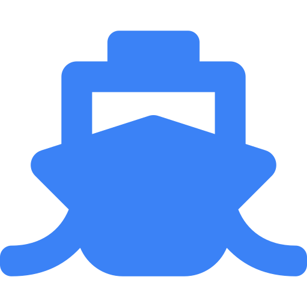
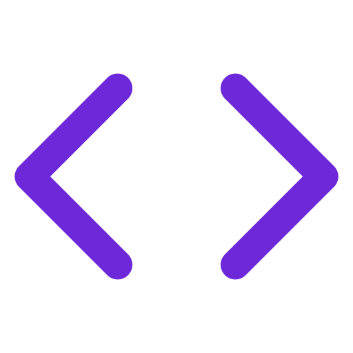

Education
Learning platforms, campus identity, and peak-load systems that stay simple for faculty, students, and administrators.
We help operators modernise the systems that run the business — platforms customers touch, infrastructure that must not fail, identity that keeps the estate safe, and AI that turns operational data into decisions. One senior team, accountable from strategy to scaled delivery.
We work wherever operations, data, identity, and customer experience have to move together — education, healthcare, logistics, travel, financial services, public sector, manufacturing, retail, and beyond. The same capability set is how we take on any operating IT problem.
Learning platforms, campus identity, and peak-load systems that stay simple for faculty, students, and administrators.
Booking, guest operations, and always-on services that hold when demand spikes — without adding operational drag.
Digital health workflows, privacy-minded infrastructure, and reliable platforms for clinical and administrative teams.

Visibility, documentation, and decision support across ports, yards, fleets, and global movement of goods.

Secure customer and operations platforms, strong identity, and automation that reduces manual risk in daily work.
Cloud, Microsoft 365, identity, and endpoint estates that large organisations can actually govern and defend.
Shop-floor to cloud integration, resilient plant systems, and data that helps operations act before exceptions spread.
Commerce, inventory, and experience platforms that stay fast at peak, with intelligence behind merchandising and service.
The same capability set also fits insurers, energy and utilities operators, real-estate and professional-services firms, workforce and staffing businesses, and any regulated or high-volume operation that needs a modern platform, a trustworthy estate, and better decisions.
Five areas that carry a client from a clear problem to a system that holds in production — without handing the work between disconnected vendors.
We design and build the software your teams and customers actually run on — cloud-native, owned end to end, and shaped around how the operation works.
Enterprise cloud architecture, application management, and highly available environments so growth does not come at the cost of outages or fragile estates.
IAM, Microsoft 365, MDM, endpoint, and cloud security — the control plane that lets people work, and keeps the organisation defensible.
Machine learning, automation, and decision-support that sit on real operational data — not a demo that never reaches the floor.
Senior architecture and platform strategy that turns an ambition into a sequenced programme: what to build, what to modernise, and what to leave alone.
Software we have built and tested — Testora for examinations, Aegis for Azure cost, security, and readiness. Both run in the client’s environment.
An end-to-end digital assessment platform for exam centres, students, and exam providers — booking, operations, transparency, and audit in one place.
Connects to your Azure environment, using your credentials, to surface cost optimisation, Microsoft Defender vulnerabilities, and resource checklists.
Partnering with Quaxarm gives direct access to seasoned architects, strategists, and engineers who have navigated complex digital transformations across global enterprises — and will stay on the programme after the workshop ends.
About the firmDigital-native — built for modern, cloud-first enterprises.
Full-stack capability — product, cloud, identity, security, and applied AI.
Cross-industry depth — education, travel, healthcare, logistics, financial services, public sector, manufacturing, and retail.
Senior-led delivery — every engagement led by founding architects.
Email is enough. Tell us the constraint; we will say if we are the right partner.